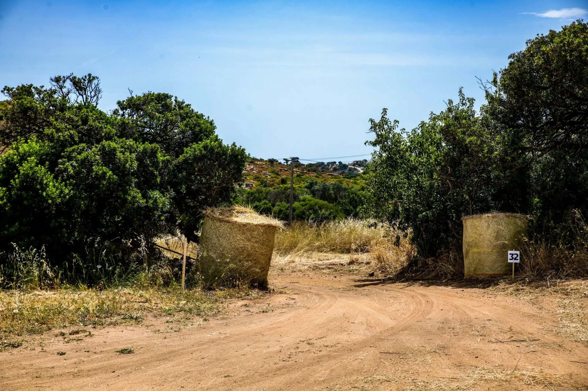
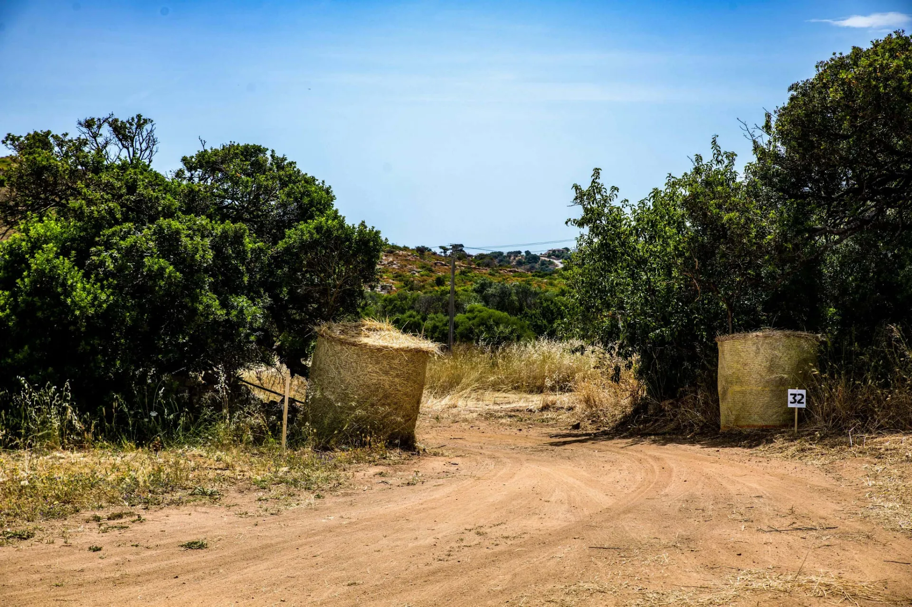
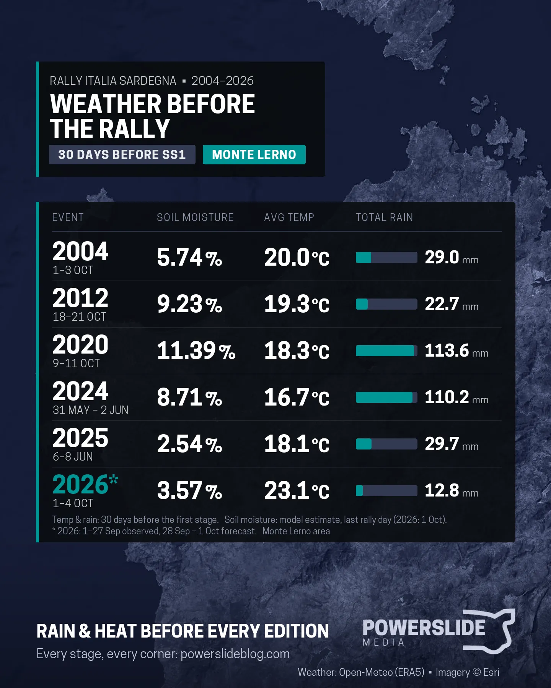
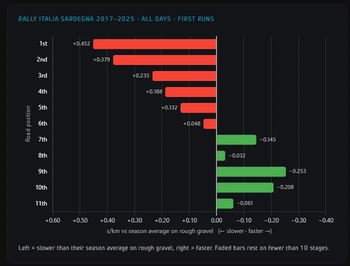

How will road sweeping affect drivers in Sardegna? An Analysis
Following the cancellation of Rally Saudi Arabia, Rally Italia Sardegna will play host to the final round of the 2026 WRC season. The Mediterranean round is renowned for its rough and twisty terrain, which will almost certainly present drivers with a demanding challenge. Provided the outcome of the rally is not determined by punctures or mechanical issues, the starting order will undoubtedly be a crucial factor, even with the event taking place in October.

The loose and twisty roads of Sardinia will be the location of the 2026 WRC season finale
Sardinia has featured this late in the season only three times before, with these instances being 2004, the inaugural edition of the event in the WRC, 2012 and 2020, when the event was postponed to October following the outbreak of the coronavirus pandemic. Predictably, the rally's later date means the threat of rain is significantly greater than in late May.
However, unlike 2012 and 2020, it hasn't rained as much on the island this month. Using a soil moisture prediction model that is based on my thesis, we can see that based on the weather conditions these two years, the soil moisture content was around 9.23% and 11.39% in the Monte Lerno and Monti di Alà regions.
Higher moisture content effectively means less sweeping, as the increased moisture helps bind the soil particles together, reducing the amount of loose material that is displaced by passing cars. Conversely, drier conditions leave a greater amount of loose gravel and dust on the surface, which can be swept away by the first cars and create a cleaner, more compacted racing line for those running later in the starting order.

This year, we see similar conditions to 2004. On the inaugural edition of the rally, the soil humidity was at 5.74%, with this year being slightly lower at 3.57%, provided, of course, that it doesn't rain in the days leading up to the event. This means that drivers early on the running order will be hampered with the surface of the road being looser, as it's drier. There is some good news for the championship contenders, especially Elfyn Evans: conditions should be slightly less dry than in 2025.
Last year, Evans was on average 0.711s/km slower on Friday, this year, if he has a clean run, his deficit could be slightly lower, thus helping him cling onto a better position for Saturday and Sunday.

How much each crew loses based on their road position in Sardegna (2017-2025)
Historically, since 2017, the first six runners face the effects of road sweeping, even if by a small amount. From seventh on the road onwards, crews set better times than their average on rough gravel. There is no reason why this would be different this time around.
Given the starting order and each team’s historical performance on the island of Sardinia, the Toyota drivers can expect strong competition from Hyundai, particularly on Friday.